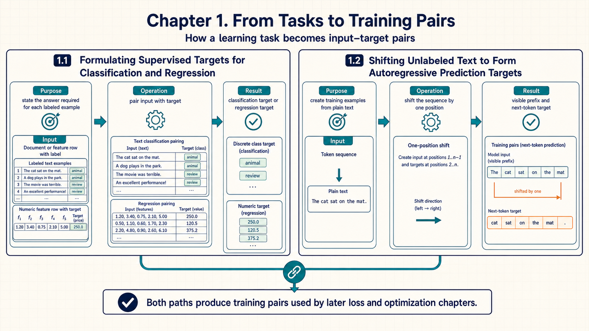
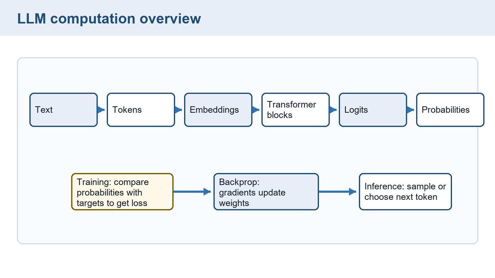

1 Prediction Targets: Defining What the Model Learns
Learning begins with examples and the answer each example is meant to predict. The answer may be a number, a class label, or the next token in the same text sequence.
The model first needs to know what counts as a correct answer. This chapter separates numerical targets, class labels, and shifted next-token targets, including the mask that excludes padding from the loss.
In code, datasets.load_dataset and pandas create rows, labels, and splits; PyTorch receives those numerical rows only after the task target is fixed.
Chapter 1 develops one required stage of the guide’s computation.

The numbered panels correspond to the chapter sections and show how each local result supplies the next operation.
1.1 Formulating Supervised Targets for Classification and Regression
A learning task starts by specifying what information enters the model, what output the model must produce, and how that output will be judged. The dataset notation in this section is the common container for classification, regression, and language-model training; later chapters change the model and loss while keeping this input-target structure.
- Example: One observed input-output pair, such as a sentence and its class label.
- Feature: A numerical representation of the input that the model can process.
- Label: The target value used to evaluate or train the model in supervised learning.
- Prediction: The model output before comparison with the label.
The course uses several task types. Regression predicts a numeric value, classification predicts a class, causal language modeling predicts the next token, and sequence-to-sequence modeling predicts one sequence from another. Each task supplies a target that later chapters compare with a model output.
In a discriminative task, the model estimates an output conditioned on the input, such as P(label | text). In a generative language task, the model estimates the probability of a sequence by multiplying next-token conditionals.
In the causal order, examples come before models. A classifier sees inputs and labels; a language model sees token prefixes and next-token targets; a sequence-to-sequence model sees input and output sequences.
The important distinction is between raw examples and numerical objects. A sentence is not yet a vector. It becomes a token sequence, then IDs, then vectors or embeddings.
Supervised learning obtains targets from labels supplied with the examples. Self-supervised language modeling constructs targets from the data itself: a visible token prefix supplies the next token, or a masked position supplies the hidden token. The source of the target changes, but both cases still produce an input, a target, and a loss.
Training, validation, and test splits have different jobs. Training rows create gradients, validation rows guide choices such as learning rate or model width, and test rows are reserved for the final estimate of behavior on unseen data. Reusing test results to choose a model turns the test set into another validation set and makes the reported estimate optimistic.
For supervised learning, every row or example contributes an input-target pair. A classifier may map a document to one class label, a regression model may map features to a number, and a sequence model may map a token prefix to the next token. The target is supplied during training so that the model can measure the difference between its output and the required answer.
The index i keeps examples separate while the model processes them one at a time or in batches. Chapter 2 explains how raw text becomes the token-ID inputs used by language models; Chapter 8 defines the losses that compare predictions with these targets.
The language-model path in the course developed by changing how much context a prediction can use. An n-gram model estimates the next token from a fixed recent window. An RNN carries a learned state from one token to the next. Attention lets one position read a weighted combination of many permitted positions, and a transformer stacks this operation with nonlinear token transformations. The later chapters develop those mechanisms in this order.
This history also separates the task from the architecture. A classifier can use a linear model, an RNN, or a transformer to output a label. A decoder language model uses a causal transformer to output a next-token distribution. The input-output target determines the loss and evaluation rule; the architecture determines what information can be combined before that output is produced.
LLMs became broadly useful when transformer training could combine large text corpora, many parameters, and large-scale optimization. That scale changes practical constraints such as data quality, compute cost, memory use, and evaluation contamination, but it does not change the basic training skeleton: inputs, parameters, logits, targets, loss, gradients, and updates.
A supervised training set pairs each input object with a target.
Supervised dataset:
\[ D = \{(x_i,y_i)\}_{i=1}^{n} \tag{1.1}\]
where D is training dataset; \(x_{i}\) is input for training example i; \(y_{i}\) is required target for training example i; n is number of examples in the dataset.
The braces collect all training pairs. The index i ranges from the first to the n-th example, so the notation says that every input has a corresponding target.
A loss can now compare the model output for \(x_{i}\) with \(y_{i}\), and empirical risk later averages those losses across D.
In next-token prediction, the target for a prefix ending at t is the next token.
Language-model target:
\[ \operatorname{target}_t = x_{t+1} \tag{1.2}\]
where \(x_{t}\) is token ID at position t; \(target_{t}\) is the token the model must predict after position t; t is position within one token sequence.
Shift one token sequence by one position: the visible prefix ends at \(x_{t}\), while \(x_{t+1}\) becomes the required next-token answer. Repeating the shift across the sequence produces many supervised pairs from one text example.
The next-token target is later compared with a vocabulary-wide logit vector by cross-entropy.
Example: Supervised dataset
A two-example dataset can be {([1,0], 1), ([0,1], 0)}.
Example: Language-model target
For token IDs [4, 8, 9], the prefix ending at \(t=2\) has target \(x_{3} = 9\).
- Classification predicts one of several discrete labels.
- Regression predicts a real-valued quantity.
- Language modeling predicts the next token or a masked token.
- Sequence-to-sequence modeling maps one sequence to another sequence.
Code example: A small labeled dataset with explicit train and validation splits
import pandas as pd
# Each row is one example; label is the supervised target.
examples = pd.DataFrame({
"text": ["markets rise", "team wins", "shares fall", "player scores"],
"label": [0, 1, 0, 1],
})
train = examples.iloc[:3]
validation = examples.iloc[3:]
print(train[["text", "label"]])
print(validation[["text", "label"]])The training and validation rows are visibly disjoint and retain the same text/label schema.
This toy split explains roles; it is too small to estimate generalization.
A target makes an example usable for supervised learning. Text generation creates a target from the sequence itself by shifting it one position.
1.2 Shifting Unlabeled Text to Form Autoregressive Prediction Targets
A causal language-model target is the token immediately following a visible prefix. One token sequence therefore supplies a training target at every unmasked position.
- Context window: The maximum number of previous tokens available to the model.
- Prefix: The token sequence available before predicting a target token.
- Shifted labels: The target sequence created by shifting token IDs one position left in causal language modeling.
The data object for a decoder LLM is a sequence of positions. The same text supplies many losses, one for each predicted token that is not padding or otherwise masked.
For token IDs \(x_{1}\) through \(x_{T}\), the model receives positions up to t and predicts \(x_{t+1}\). Training evaluates all eligible positions in parallel by aligning the logit row at position t with the label at position t+1.
Padding positions and deliberately ignored tokens are removed from the loss with a mask or ignore index. They can occupy tensor storage without contributing a target or gradient.
The probability of a token sequence is factored into next-token conditionals.
Causal factorization:
\[ P(x_{1:T}) = \prod_{t=1}^{T} P(x_t\mid x_{<t}) \tag{1.3}\]
where \(x_{1:T}\) is token sequence; \(x_{<t}\) is tokens before position t.
The probability chain rule writes a sequence probability as a product of conditional probabilities; a causal LM restricts each condition to previous tokens.
next-token training supervises each factor in this product.
Example: Causal factorization
If \(P(x_{1})=0.5\), \(P(x_{2}|x_{1})=0.4\), and \(P(x_{3}|x_{1},x_{2})=0.25\), then \(P(x_{1:3})=0.05\).
Shifting turns each position into a next-token prediction. The model still needs a numeric representation for both the input tokens and their targets.
1.3 Empirical-risk trace
The computation in this chapter begins before a model exists. A raw example must become a row in a numerical array, and the target must become a tensor whose dimensions match the loss function. For a classifier, the input batch is usually a matrix X with one row per example, while the labels are either class ids or one-hot vectors. For a language model, the same idea is applied along a sequence: each prefix becomes the input and the next token becomes the target.
Empirical risk turns many example losses into one training objective. The model runs on each row or sequence position, produces scores, and the loss compares those scores with the target. The individual losses are then averaged into a scalar, because backpropagation needs one scalar endpoint. That average is the quantity the optimizer can reduce.
An LLM computation can be followed from symbols to numbers and back to symbols.

The same objects recur in later chapters. Training follows the loss and gradient path; inference follows the logits, probabilities, and token-selection path.
Empirical risk averages per-example losses into one scalar objective. Inputs keep a batch axis; logits have one class or vocabulary axis; the reduced loss is scalar. Rows or token positions pass through a model, losses are computed independently, and reduction averages them.
In PyTorch, DataLoader creates batches; model calls produce logits; CrossEntropyLoss or BCE reduces to a scalar.
Performance note: Large batches spend memory on activations and logits; long sequences multiply the number of supervised token positions.
Example: Dataset to empirical risk: three examples
Three examples: \(x_{1}=[1,0]\), \(y_{1}=1\); \(x_{2}=[0,1]\), \(y_{2}=0\); \(x_{3}=[1,1]\), \(y_{3}=1\).
A linear model:
\(z_{1} = 1 \cdot 0.8 + 0 \cdot (-0.3) + 0.1 = 0.9\)
\(z_{2} = 0 \cdot 0.8 + 1 \cdot (-0.3) + 0.1 = -0.2\)
\(z_{3} = 1 \cdot 0.8 + 1 \cdot (-0.3) + 0.1 = 0.6\)
Apply sigmoid: \(p_{1}=\sigma(0.9)=0.711, p_{2}=\sigma(-0.2)=0.450, p_{3}=\sigma(0.6)=0.646\)
Binary cross-entropy losses:
\(L_{1} = -\log(0.711) = 0.341\) (y=1, high p, low loss)
\(L_{2} = -\log(1-0.450) = -\log(0.550) = 0.598\) (y=0, p near 0.5, medium loss)
\(L_{3} = -\log(0.646) = 0.437\) (y=1, medium p, medium loss)
Empirical risk: \(\hat{R} = (0.341 + 0.598 + 0.437) / 3 = 0.459\)
This scalar is the training objective; backpropagation uses it to update w and b.
Key calculations
Empirical risk:
\[ \widehat{R}(\theta) = \frac{1}{N}\sum_i \operatorname{loss}(f_\theta(x_i),y_i) \tag{1.4}\]
Conditional language model:
\[ P(x_{1:T}) = \prod_t P(x_t\mid x_{<t}) \tag{1.5}\]
Dimension trace
These dimensions appear in the computation in order.
- Raw examples: N records before numerical encoding.
- Feature matrix: X has dimensions [N, D], where rows are examples and columns are features.
- Targets: y has dimensions [N] for class ids or [N, C] for one-hot/probability targets.
- Logits: model scores have dimensions [N, C] for C classes.
- Loss: per-example losses have dimensions [N] before reduction to one scalar.
PyTorch implementation notes
- A dataset split is not cosmetic: only the training rows may update parameters.
- Cross-entropy expects logits and class indices; passing probabilities or float labels changes the meaning.
- The batch dimension should survive the forward pass until the loss reduces it.
It should now be clear how to compute empirical risk by hand for three examples, then point to the matching PyTorch loss call.
The first mathematical object is not a model but a dataset made of examples, targets, and splits.
Tokenization turns text-bearing examples into token strings, vocabulary entries, and token IDs.